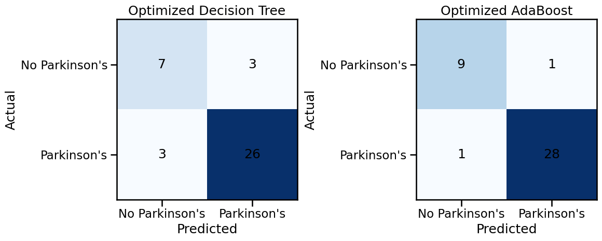
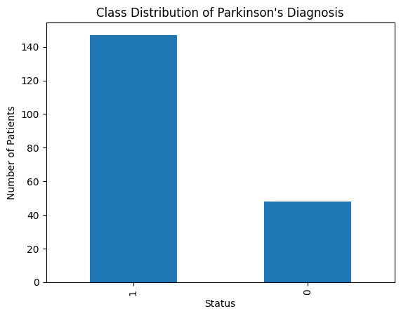
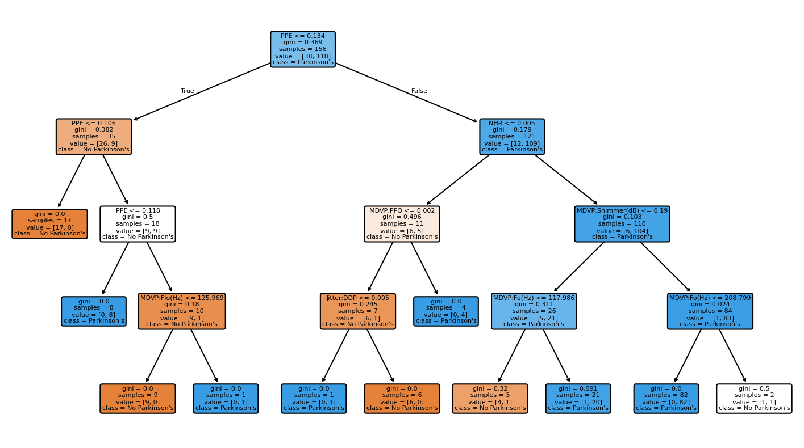
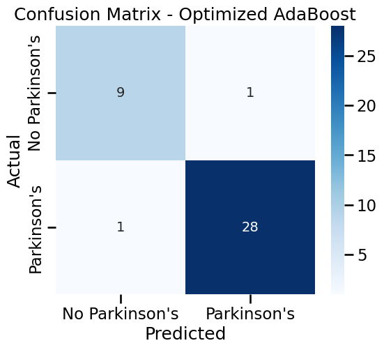
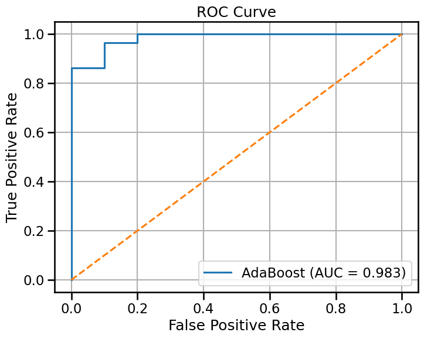

Machine Learning Project.
Comparing Decision Tree and AdaBoost classifiers using Parkinson’s voice measurements.

Project overview
For my Machine Learning Project, I compared a Decision Tree and AdaBoost using voice measurements labelled by Parkinson’s status. The assignment dataset contained 195 recordings and 25 columns. I removed the name and DCAT columns, leaving 22 numerical inputs and the status label.
- I used a stratified 80/20 split, with 156 records for training and 39 for testing.
- Missing numerical values were filled using medians calculated from the training set.
- I trained a baseline for each model, then used GridSearchCV with five-fold cross-validation to tune their settings.
The tuned AdaBoost model scored 94.87% test accuracy, compared with 84.62% for the tuned Decision Tree. I also checked F1 scores, ROC-AUC and confusion matrices to understand the errors. The results below are the saved outputs from my notebook and describe this particular test split.
The problem
I wanted to compare how a single tree and an ensemble handled the same voice measurements. The dataset was small and the classes were uneven, so I needed to check overfitting and class-level errors alongside accuracy.
The solution
I built both models in Scikit-learn, kept the test split fixed and tuned each model using training data. I compared their accuracy, F1 scores and ROC-AUC, then used confusion matrices to count the mistakes.
From voice measurements to model scores
Select a step to explore the workflow.
Voice dataset
The assignment dataset contained 195 recordings and 25 columns. Removing the name and DCAT columns left 22 numeric inputs and the status label.
How the models compared
All four runs used the same 39-record test set. Tuning improved AdaBoost’s test accuracy; the Decision Tree’s test accuracy stayed the same.
| Model | Training accuracy | Test accuracy | Test F1 |
|---|---|---|---|
| Original Decision Tree | 100.00% | 84.62% | 0.90 |
| Tuned Decision Tree | 98.08% | 84.62% | 0.90 |
| Original AdaBoost | 100.00% | 79.49% | 0.86 |
| Tuned AdaBoost | 100.00% | 94.87% | 0.97 |
From the notebook
Select a chart to view the original output.

Class distribution
The dataset had more Parkinson’s-labelled recordings, which is why I also checked class-specific scores.

The tuned decision tree
The tuned tree used a maximum depth of four. Open the image to inspect its decisions.

AdaBoost confusion matrix
AdaBoost correctly classified 37 of 39 test records, with one error in each class.

ROC curve
The tuned AdaBoost model recorded a test ROC-AUC of 0.9828.
What I worked on
- Checked the dataset’s shape, types, missing values, duplicate rows and class distribution with Pandas.
- Separated the target from the 22 numerical features and created a stratified train/test split with random state 42.
- Filled missing values in both splits using training-set medians.
- Built baseline Decision Tree and AdaBoost classifiers and compared their training and testing scores.
- Used five-fold GridSearchCV to tune tree depth, pruning and sample limits, plus AdaBoost’s learning rate and estimator count.
- Plotted confusion matrices, ROC curves, the tuned tree and feature importance to inspect the results.
Technologies
Outcome
Tuned AdaBoost made two errors on the 39-record test set, compared with six for the tuned Decision Tree. Its Parkinson’s-class F1 score was 0.97 and ROC-AUC was 0.9828.
- The selected AdaBoost settings were 200 estimators, a learning rate of 0.5 and base-tree depth of 2.
- Tree tuning lowered training accuracy from 100% to 98.08%, but its test accuracy stayed at 84.62%.
- AdaBoost still scored 100% on the training set, so its higher test score does not remove the need to check overfitting.
The split was by recording rather than by person. A stronger follow-up would keep each person’s recordings in one split and fit median filling inside each cross-validation fold. I would also test across more splits before drawing a broader conclusion.